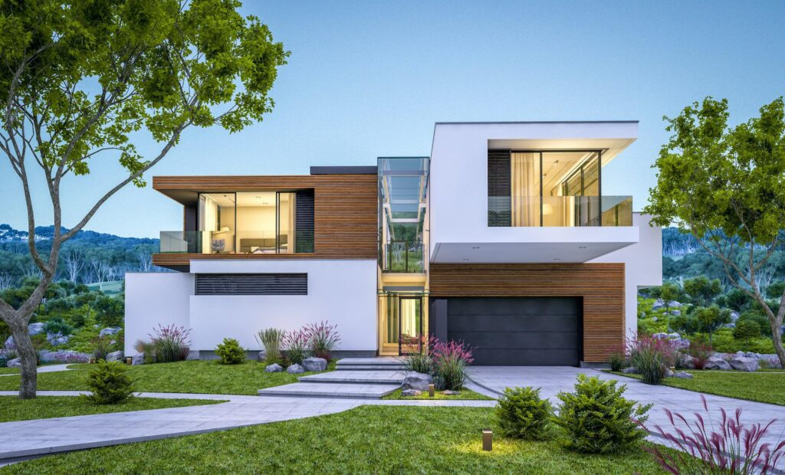

Nuestra empresa cuenta con un catálogo de patrones estandarizados que nos han permitido optimizar su producción.
Desarrollamos todo tipo de soluciones metálicas para la arquitectura con los procesos más avanzados de transformado del metal por medio de corte CNC y punzonado para crear fachadas de todas las formas, volúmenes y texturas imaginables.
Ofrecemos proyectos estéticos y modernos que se integran con la tendencia innovadora de las principales ciudades del país.
Los diferentes tipos de arte en las láminas perforadas tienen una gran variedad de aplicaciones en la decoración y exhibición de productos exteriores e interiores para hogar, diseño de oficinas, decoración de edificios, entre otros.
